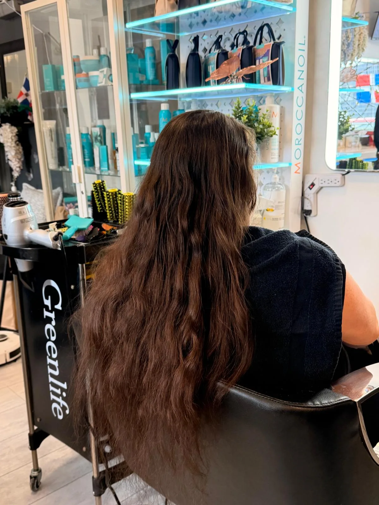
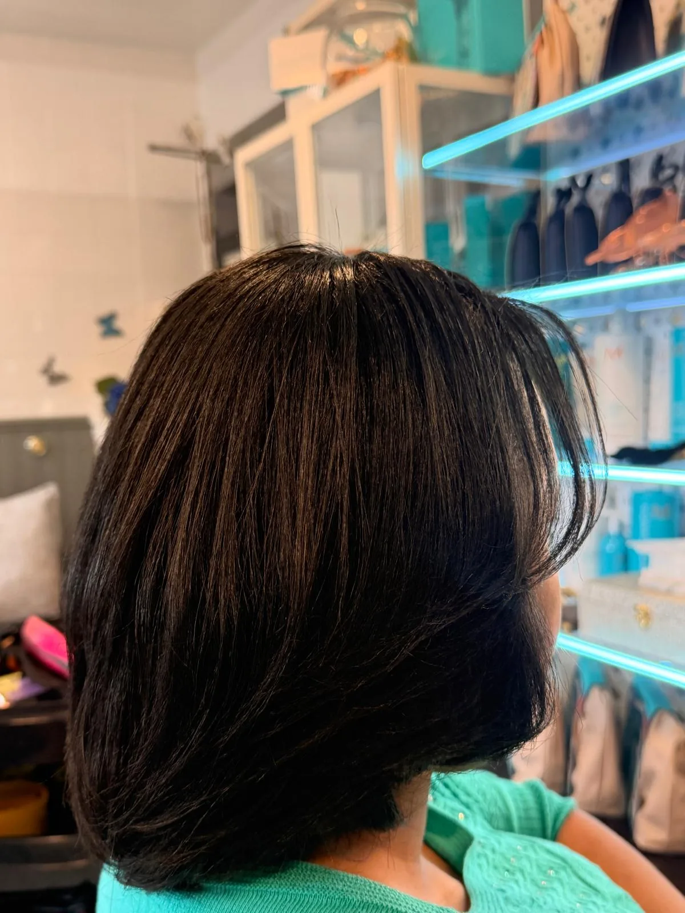

Salon de coiffure Mechi
Salon de coiffure. Coupe, couleur, lissage et brushing.

Tu arrives comme tu es.

Tu repars comme tu l'as imaginé.
Demander une soumissionCe que tu nous dis
« Mes cheveux frisent dès qu'il fait humide. »Lissage, frisottis, cheveux qui gonflent.
« Je veux une coupe qui tombe bien sans y penser le matin. »Coupe, frange, dégradé.
« J'ai envie de couleur, mais j'ai peur d'abîmer mes cheveux. »Couleur, reflets, cuivré.
« Mes longueurs sont là, mais elles n'ont aucune forme. »Brushing, mise en forme, volume.



Lissage soyeux
Des cheveux lisses et brillants qui bougent encore, sans effet plat.
Coupe et frange
Un dégradé qui encadre le visage et se coiffe en deux gestes.
Couleur cuivrée
Une couleur riche, posée avec un soin qui protège la fibre.
Brushing
Du volume aux racines et des pointes qui tombent en boucles souples.
Toi
Tu nous racontes ton avant.
Le salon
On te répond avant les ciseaux.
Tu décris tes cheveux aujourd'hui, ce qui te dérange et ce que tu aimerais.
On lit tout et on te propose le service, la durée et le prix.
Tu proposes deux journées qui t'arrangent.
On confirme l'heure qui marche pour nous deux.
Tu envoies 20 $ par virement Interac.
Ta chaise est gardée. Les 20 $ sont déduits de ta facture.
Avec un dépôt de 20 $
Ta place est gardée, rien que pour toi.
Les 20 $ sont déduits de ta facture le jour même.
Tu viens, tu ne paies rien de plus.
Sans dépôt
Un rendez-vous oublié.
Une chaise vide pendant que d'autres attendent une place.
Et des rendez-vous qui se font rares pour tout le monde.
Demande de soumission
Ton avant, ton après.
Dis-nous où en sont tes cheveux et ce que tu veux. On te répond avec le service, la durée, le prix et l'heure.